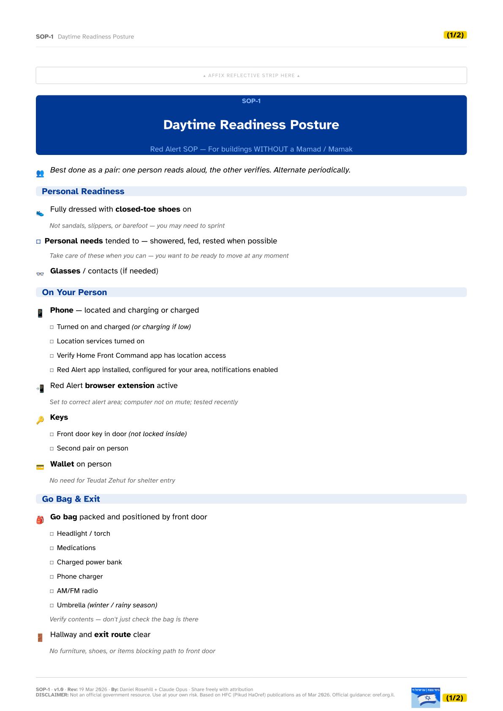
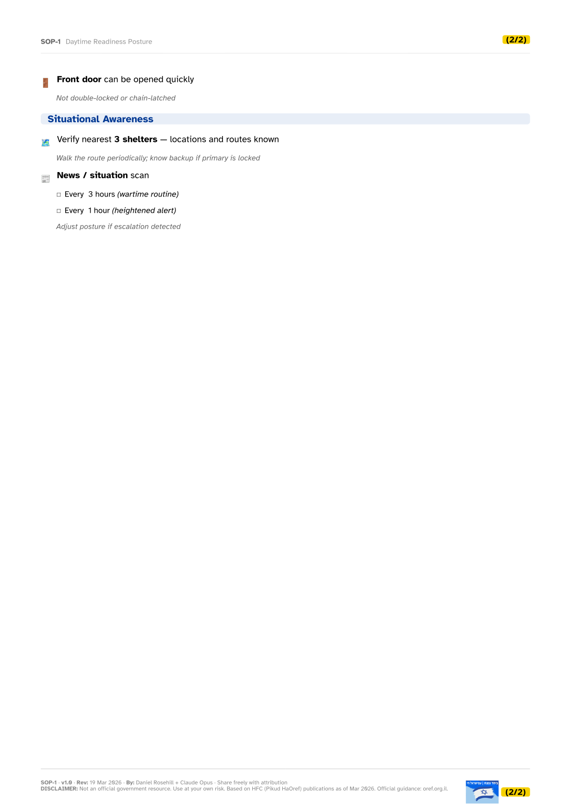

SOP-1
Daytime Readiness Posture
Comprehensive checklist for daytime readiness — personal state, phone, keys, go bag, situational awareness.


SOP-1 — Readiness Postures
Comprehensive checklist for daytime readiness — personal state, phone, keys, go bag, situational awareness.

